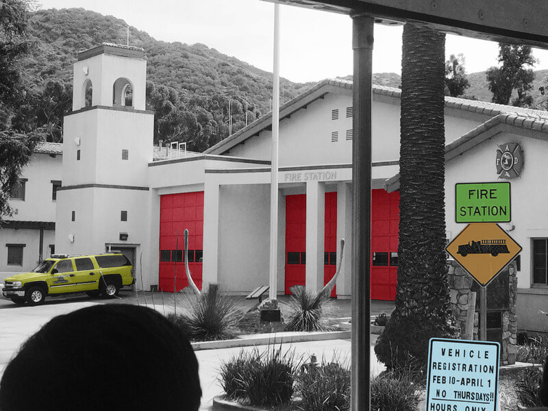
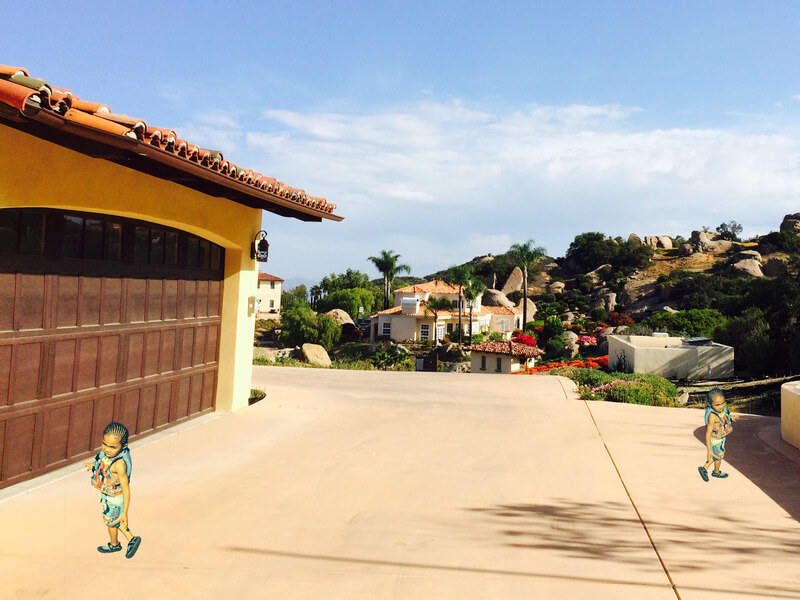

About Me
My name is Rory Stoll-Green and I study Computer Programming at Saint Paul College in St. Paul, Minnesota. My ideal field is video game programming but I have a lot of interest in Web Design and Web Development. I made this website as a portfolio of my skills developing websites.
I have taken the following classes at Saint Paul College:
- Photoshop 1
- Computer Science and Information Systems
- Web Fundamentals, HTML and CSS
Over the next few semesters I'm goint to take more Web Design and Web Development classes to obtain the Web Development Certificate
I have also taken classes at Summit Academy Opportunities Industrialization Center and received an Information Technology Certification. In those classes I gained experience with both computer hardware and software.
Photos edited with Adobe Creative Cloud

